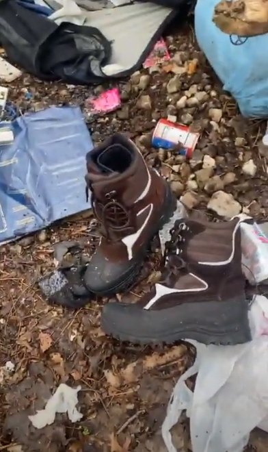

Timeline photos
I've been thinking a lot about these boots the last couple days.
These boots were left at the door of a tent that was going to be all thrown away by the city of Akron in one of its mindless homeless camp sweeps.
These are brand new boots. Just laying here waiting for the city to come and throw them away.
They have all their shoelaces. They don't even look that dirty from use. These boots would easily sell in a second hand store.
I guarantee some homeless supporter gave these boots to the homeless woman who lived in this tent with all the love and hope in their heart they could muster.
Today, the boots are gone. The tent is gone. And the woman is gone. They were all thrown away. Put in a truck and taken to who knows where.
The madness of it all in my mind now comes in the form of thanks.
I have become so twisted and warped by living with the cruel inhumanity of man that more and more I give thanks for the cruelty and inhumanity. I give thanks for the death and destruction.
Without the death and destruction there is no life and love. And the worse the torture, the more thankful I become.
I feel insane. I feel I have slipped into a universe of inversion. Where bad is good. (I haven't gotten to a place where I believe good is bad. But who knows. Maybe that's where all this leads.)
Without darkness, there is no light.
And so I give thanks to the darkness.